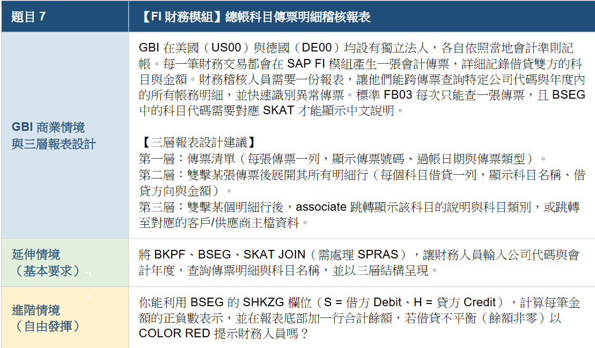
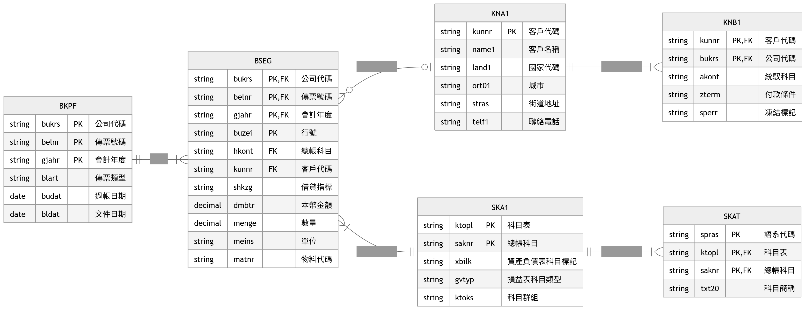
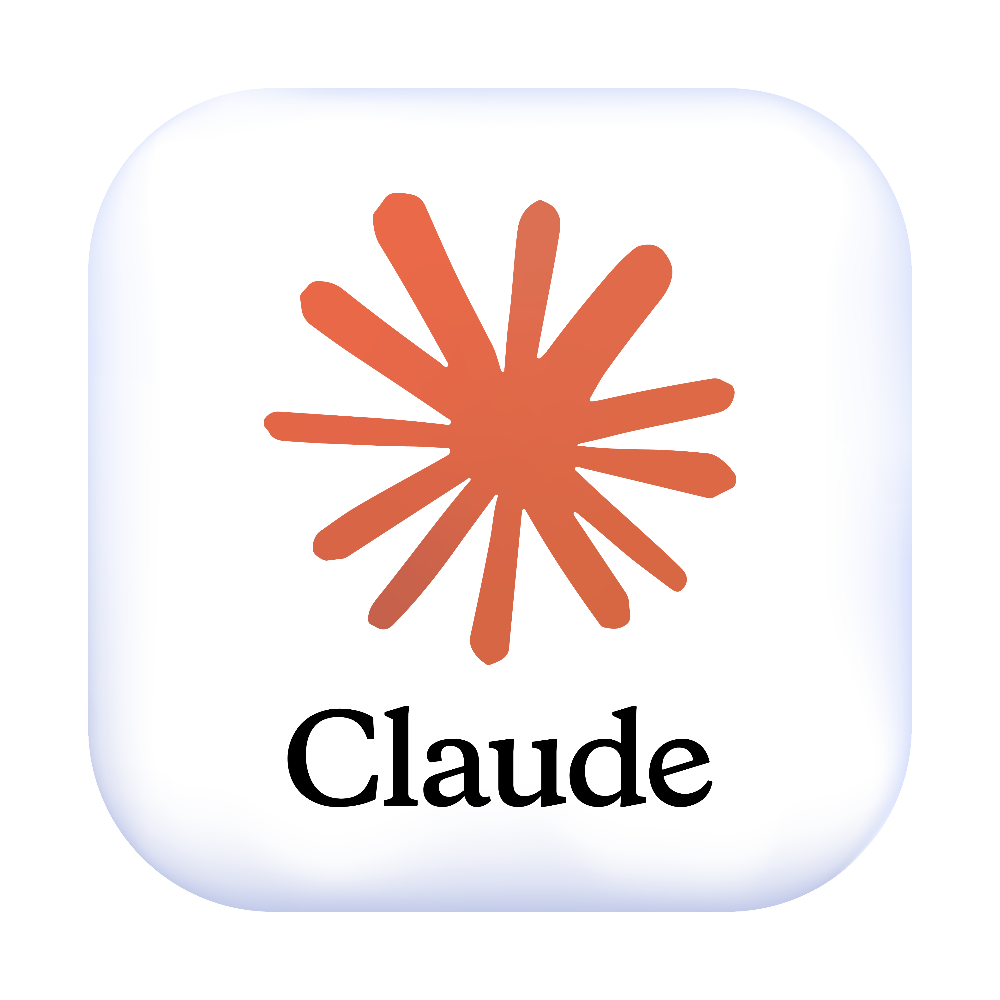

專案總覽 Project Roadmap
本專案以 SAP FI 銷售相關會計傳票為核心，從期中三層互動式查詢報表，逐步升級到 Dialog 審核與 ALV 稽核工作台。

Midterm 期中專案：三層互動式 WRITE Report
期中報表把 FI 傳票查詢、分錄展開、科目與客戶主檔檢核集中在同一支報表中，降低財會稽核人員在 SAP 標準畫面間切換的成本。
商業邏輯與痛點
沒有程式時
財會人員通常從 FB03 或 Document List 查詢傳票；但標準畫面偏向單張傳票檢視，若要批次檢查 RV 傳票、分錄明細、科目名稱與客戶資料，就必須反覆切換畫面。
主要痛點
- 查詢分散：FB03 不利於批次檢視
- 人工比對多：科目代碼、文字、主檔要分開確認
- 稽核效率低：多張傳票需要重複操作
- 異常不易發現：借貸方向與金額平衡需人工檢查
沒有程式時的 SAP 操作流程
三層互動式報表架構
Level 1 傳票清單
來源：BKPF
顯示公司代碼、傳票號碼、年度、傳票類型、文件日期、過帳日期。
Level 2 傳票明細
來源：BSEG + SKAT
顯示行號、總帳科目、科目名稱、借貸方向、金額、客戶代碼。
Level 3 主檔分流
HKONT → SKA1
KUNNR → KNA1
依點擊欄位進入科目或客戶主檔稽核。
使用資料表與欄位
| Table | 中文說明 | 主要欄位 | 專案用途 |
|---|---|---|---|
| BKPF | 會計傳票抬頭表 | BUKRS 公司代碼、BELNR 傳票號碼、GJAHR 年度、BLART 傳票類型、BLDAT 文件日期、BUDAT 過帳日期 | 第一層傳票清單與查詢條件來源 |
| BSEG | 會計傳票明細表 | BUZEI 行號、HKONT 總帳科目、KUNNR 客戶代碼、SHKZG 借貸指標、DMBTR 本位幣金額、MENGE 數量、MEINS 單位、MATNR 物料代碼 | 第二層分錄明細與借貸檢查 |
| SKAT | 總帳科目文字表 | SPRAS 語言代碼、KTOPL 科目表、SAKNR 總帳科目號碼、TXT20 科目短文字 | 補上科目名稱，避免只看代碼 |
| SKA1 | 總帳科目主檔表 | KTOPL 科目表、SAKNR 科目號碼、XBILK 資產負債表科目標記、GVTYP 損益表科目類型、KTOKS 科目群組 | 第三層科目屬性檢核 |
| KNA1 | 客戶主檔一般資料表 | KUNNR 客戶代碼、NAME1 客戶名稱、LAND1 國家、ORT01 城市、STRAS 地址、TELF1 電話 | 第三層客戶背景資料檢核 |
期中 ER Model

| 關係 | 說明 |
|---|---|
| BKPF → BSEG | 一張傳票抬頭可對應多筆傳票明細。 |
| BSEG → SKAT | 用 HKONT 對應 SAKNR，取得科目文字。 |
| BSEG → SKA1 | 用 HKONT 對應 SAKNR，取得科目主檔屬性。 |
| BSEG → KNA1 | 用 KUNNR 對應客戶主檔。 |
期中 Code Flow
啟動與第一層
- START-OF-SELECTION
- CREATE OBJECT go_report
- go_report->start()
- get_level1()
- display_level1()
互動下鑽
- AT LINE-SELECTION
- handle_interaction()
- get_level2() → display_level2()
- 點 HKONT → get_level3_skat()
- 點 KUNNR → get_level3_kna1()
Q1 期末第一題：Dialog Programming 升級版
期末第一題延續期中 FI 查詢邏輯，但加入 Dialog Screen，讓查詢流程進一步具備審核互動與摘要報表輸出。
Dialog 升級的商業意義
從查詢到審核
期中報表解決「找資料」；Q1 則模擬財會稽核人員對指定傳票進行審核註記與狀態確認。
作業價值
完成審核後，可在同一流程中呼叫摘要報表，不必離開目前作業再重新啟動另一支報表。
Screen 0100 / Screen 0200 功能
Screen 0100：傳票審核畫面
- 顯示被選取傳票
- 輸入審核結果 Approved / Hold / Rejected
- SAVE 儲存本次審核資料
- CLEAR 清除輸入
- VIEW / SUMM 呼叫 Screen 0200
Screen 0200：審核摘要報表
- SUPPRESS DIALOG
- LEAVE TO LIST-PROCESSING
- display_review_summary()
- 輸出本次審核摘要
Dialog 呼叫流程
Q1 Code Flow
Report 端
- START-OF-SELECTION → go_report->start()
- get_level1() → display_level1()
- AT LINE-SELECTION → handle_interaction()
- 雙擊審核行 → prepare_review_dialog()
Screen 端
- CALL SCREEN 0100 → user_command_0100
- save_review() / clear_review_input()
- CALL SCREEN 0200
- status_0200 → display_review_summary()
Q2 期末第二題：三個 ALV 整合應用工作台
Q2 將期中三層互動式報表升級為 ALV 工作台，讓傳票清單、分錄明細與主檔檢核結果在同一個畫面互動。
ALV Workbench 商業意義
原本：WRITE 下鑽
使用者逐層進入下一頁，畫面切換較多，資訊比較分散。
升級：ALV 聯動
點選 ALV1 傳票後，ALV2 立即顯示明細；再點 ALV2 的 HKONT / KUNNR，ALV3 立即顯示檢核資訊。
三個 ALV 互動架構
ALV1：傳票清單
來源：BKPF + BSEG 彙總
顯示傳票號碼、日期、借貸合計與風險狀態。
ALV2：傳票明細
來源：BSEG + SKAT
顯示行號、科目、科目名稱、借貸方向、金額、客戶代碼。
ALV3：主檔 / 檢核資訊
來源：SKA1 / KNA1 / KNB1
顯示科目主檔與客戶公司別財務設定。
Q2 使用資料表與欄位
第二題沿用 BKPF、BSEG、SKAT、SKA1、KNA1，並新增 KNB1 以補強客戶公司代碼層級的財務檢核。
| Table | 中文說明 | 主要欄位 | 專案用途 |
|---|---|---|---|
| KNB1 | 客戶公司代碼層級資料表 | KUNNR 客戶代碼、BUKRS 公司代碼、AKONT 統馭科目、ZTERM 付款條件、SPERR 凍結標記 | 檢查客戶在特定公司代碼下的財務設定，較 KNA1 更接近 FI 稽核情境。 |
Q2 ER Model

| 關係 | 說明 |
|---|---|
| BKPF → BSEG | 一張傳票抬頭對應多筆傳票明細。 |
| BSEG → SKAT / SKA1 | 用 HKONT 對應 SAKNR，取得科目文字與科目主檔。 |
| BSEG → KNA1 | 用 KUNNR 對應客戶一般資料。 |
| KNA1 → KNB1 | 一個客戶在不同公司代碼下可以有不同財務設定。 |
| BSEG / BKPF → KNB1 | 用 KUNNR + BUKRS 查客戶公司別財務設定。 |
Q2 Code Flow
啟動與 ALV 初始化
- START-OF-SELECTION → lcl_app->start()
- load_documents() → calculate_document_totals()
- CALL SCREEN 0100 → init_screen()
- display_alvs()
互動流程
- ALV1 點傳票 → handle_doc_row() → load_items()
- ALV2 點 HKONT → load_account_checks()
- ALV2 點 KUNNR → load_customer_checks()
- RISK / ALL / SUMM → 對應方法刷新
AI 協作流程
本頁整理專案的 AI 協作流程，聚焦於工具使用與實作方法。期中與期末 均依「需求解析 → 文件規格 → 程式撰寫 → 審查修正」的流程完成，確保 規格一致、實作可追溯、成果可驗證。
使用的 AI 工具
Logo
Gemini
解析期中專案需求
產生 spec.md / steps.md
Logo
GitHub Copilot
依規格輔助撰寫 ABAP
可調用自訂 Agent Skill

Logo
Claude Haiku
作為 Copilot 使用模型
協助生成與修正程式碼
Logo
Codex
解析期末需求
產生計畫、審查規則與重構文件
期中：Gemini → Copilot + Claude Haiku
期末：先建立 Final 總計畫，再拆成 Q1 / Q2 文件
Q1 Dialog Programming
- FINAL_PROJECT_EXECUTION_PLAN.md
- QUESTION1_DIALOG_PROGRAMMING_EXECUTION_PLAN.md
- QUESTION1_DIALOG_CODE_REVIEW.md
- 撰寫 Dialog 程式
- QUESTION1_DIALOG_CODE_REFACTOR_GUIDANCE.md
- 審查通過
Q2 ALV Workbench
- FINAL_PROJECT_EXECUTION_PLAN.md
- QUESTION2_ALV_INTEGRATION_EXECUTION_PLAN.md
- QUESTION2_ALV_CODE_REVIEW.md
- 撰寫三 ALV 工作台
- QUESTION2_ALV_CODE_REFACTOR_GUIDANCE.md
- 審查通過